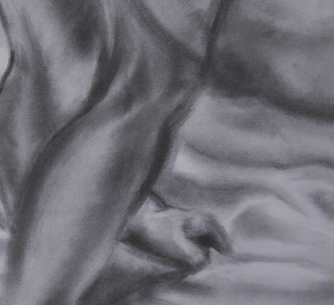
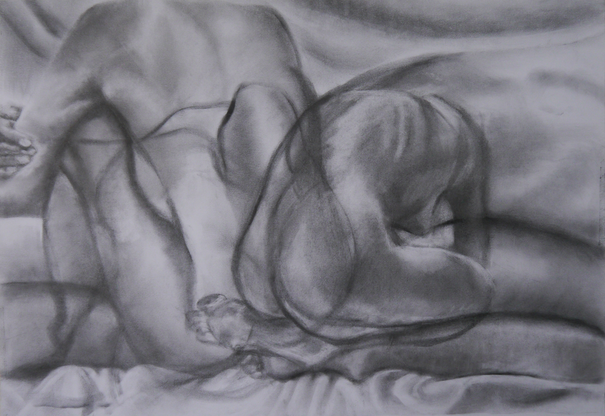

CHARCOAL TRIPTYCH
FIGURE DRAWING, 2021
CHARCOAL
18"x24"
This three-piece charcoal series exemplifies the passing of time as an introvert or someone who is spending time alone. Each piece plays off of the dichotomy of stillness and movement by overlapping and layering multiple poses with different amounts of transparency. In order, they portray expression, experimentation, and isolation.